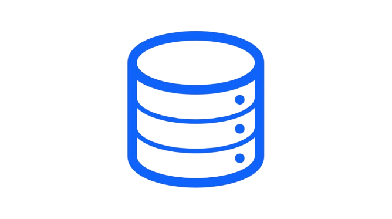

SQL (Structured Query Language) es el lenguaje estándar para interactuar con bases de datos relacionales, permitiendo gestionar, consultar, insertar, actualizar y eliminar datos estructurados en tablas. Es fundamental para analistas y desarrolladores, soportado por sistemas como MySQL, PostgreSQL y SQL Server.
Componentes y Funciones Clave de SQL:
Definición de Datos (DDL): Comandos para definir o modificar la estructura de la base de datos (CREATE, ALTER, DROP).
Manipulación de Datos (DML): Comandos para gestionar los registros (SELECT, INSERT, UPDATE, DELETE).
Estructura Relacional: Organiza la información en tablas (filas y columnas) vinculadas por claves primarias y foráneas.
Versatilidad: Utilizado en aplicaciones para realizar consultas complejas y análisis de datos.
Sistemas de Gestión de Bases de Datos (SGBD) Populares:
MySQL: Versión de código abierto muy popular.
PostgreSQL: Conocido por su robustez.
Microsoft SQL Server: Utiliza Transact-SQL (T-SQL).
Oracle Database: Enfocado en entornos empresariales.
| FUNCIONES | PARA QUE SIRVEN |
|---|---|
| SUM | Realizan cálculos sobre un conjunto de valores y devuelven un único valor resumen. |
| Lenght | Devuelve el número de caracteres que contiene una cadena dada (incluyendo espacios y puntuación). |
| Trim | Elimina el exceso de espacios y tabulaciones del principio y el final de una cadena que pasamos como argumento. |